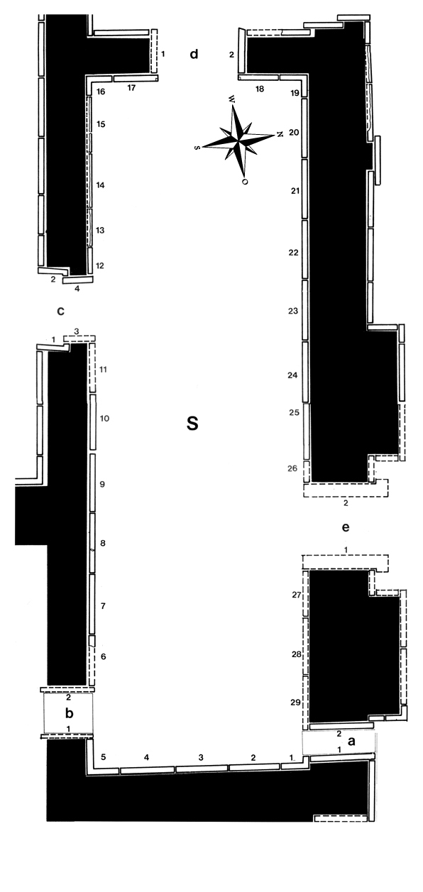

Room S
Layard excavated Room S, a reception hall containing 29 reliefs (plus 10 slabs and two lamassu in the doors), in the spring of 1847. Some of the reliefs were badly damaged, but all were of exceptional quality. Layard sent only one slab (S-3) directly to the British Museum. He said about it: “The figure of the king, one of the most carefully sculptured and best preserved in the palace, is included in the collection sent to England” (Nineveh II, p. 7).
When Iraqi archaeologists started new excavations in several rooms of the palace in the 1970s, they rediscovered in Room S four complete reliefs still in situ (S-20 to S-22, S-d-2) and large fragments of others on the floor in the interior of the room. Layard had here, as in many other rooms, simply followed the walls, sometimes in tunnels. In other cases, pieces were found in situ, fragments distributed over several other rooms, and only the heads had been removed (S-10, S-24, S-25, S-28, S-29). Four slabs have been lost entirely (S-c-3) or mostly (S-5, S-9, S-27), and can only be reconstructed with the help of Layard’s drawings.
According to a video published by Reuters, this room may have been leveled by IS militants in early March 2015. Footage shows destruction of several of the in situ reliefs of the north wall, including S-23&29 (large fragments pushed to the ground), S-25&26 (cut with a concrete saw), and S-28 (defaced with a sledgehammer), and the preparation of explosive devices before the reliefs S-24&25 that appear to have been detonated in subsequent scenes.
Click on S in the middle of the room to see all panels positioned in their respective walls, or on the individual panels along the inner walls and in the entryways to go to CDLI pages associated with them.
 |
Relief Slabs by Collection (duplication results from individual fragments in different places)
Amherst College, Amherst, Masssachusetts, USA |